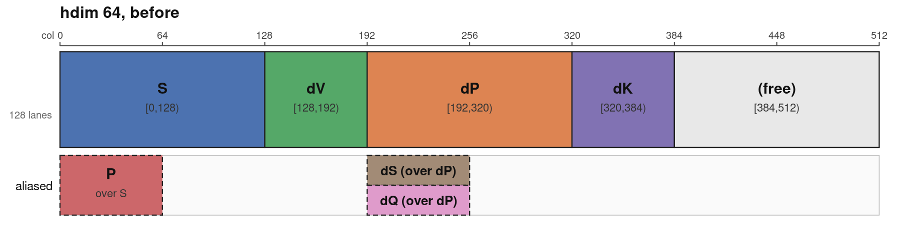
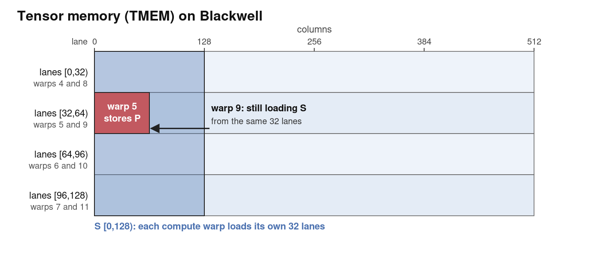
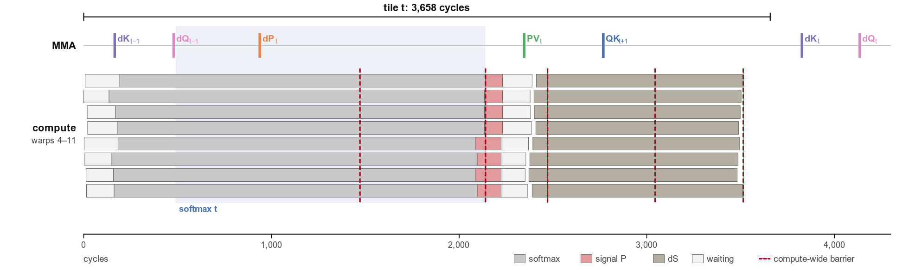
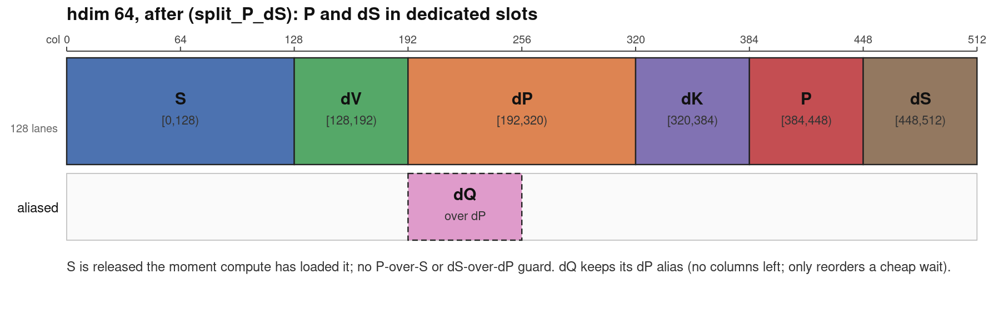
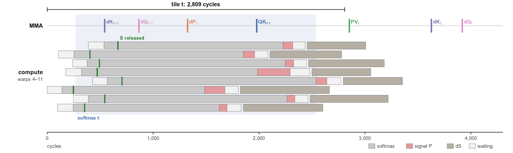
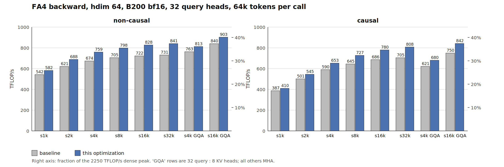
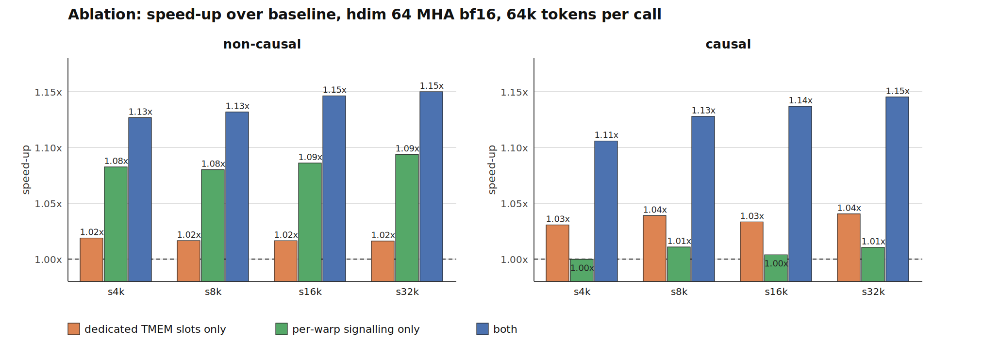
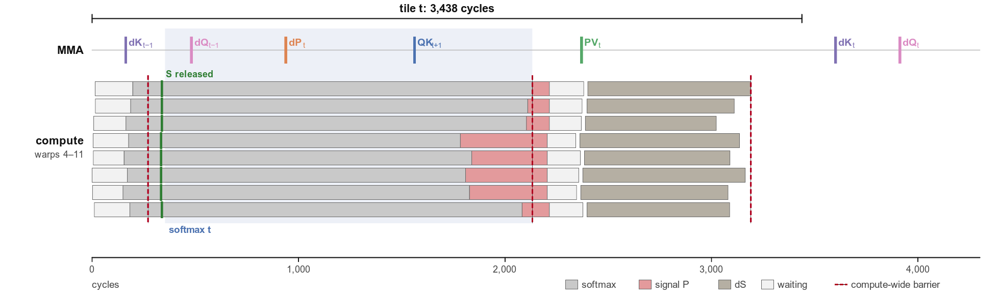

FlashAttention 的反向 pass,是训练里吃显存带宽与能耗的大头。Colfax Research 这篇『优化日记』讲的是 FA4 backward 在 Blackwell B200 上随 head dimension 的前后两档悬殊表现——head dim 128 能到约 55% 峰值,head dim 64 只剩 26–32%——以及作者如何靠闲置的四分之一张量内存(TMEM),把 hdim 64 拉回最高 903 TFLOPS。
下面按『为什么慢 → baseline 为何被迫插入五道全局栅栏 → 怎样用闲置 TMEM 去别名、让张量核在 softmax 区间多干活』逐步走完;文内图、表格与代码片段均按原文完整保留,实现以 PR 挂在 FlashAttention 仓库。
本文讨论 FlashAttention-4(FA4)在 NVIDIA Blackwell GPU 上的反向 pass。head dimension 为 128 时 FA4 backward 已相当高效,单个 B200 上跑到 1237 TFLOPS,约占峰值算力吞吐的 55%。但同样形状、head dimension 64 时,同一个 kernel 只剩峰值算力的 26–32%——这一档明显有大量优化空间。
要讲的优化,核心是充分利用空余的张量内存(TMEM)来提升 hdim 64 的 FA4 backward。关键观察:head dim 为 64 时,默认 kernel 设计下 TMEM 有四分之一闲置。把这部分拿去给某些驻留张量做去别名(de-alias)——也就是让同一轮迭代里的 P 不再叠在 S 上、dS 不再叠在 dP 上。
去别名换来两个自由:(1)去掉多余同步,把 256 线程的全局栅栏换成纯 warp 同步;(2)重排 MMA 发出顺序,让下一轮迭代的 QK 乘加与当前轮 softmax 重叠。两者叠加拿到 1.06–1.15× 提速,最高 903 TFLOPS(约峰值 40%)。改动见 FlashAttention 仓库 [PR #2804](https://github.com/Dao-AILab/flash-attention/pull/2804)。
FA4 反向算一串标准式子:S = QKᵀ,P = exp(S − L),dP = dO·Vᵀ,dS = P ∘ (dP − D),以及 dV = Pᵀ·dO,dK = dSᵀ·Q,dQ = dS·K。∘ 为逐元素乘;L 与 D 分别是行 log-sum-exp 及其差分。
并行划分按 batch、attention heads、KV tiles:每个 CTA 持一块 K、V tile,主循环遍历 Q tiles,每轮算属于它的 dK、dV,并为当前 Q tile 累加一小片 dQ 到全局 fp32 累加器。
FA4 backward 是 warp-specialized 内核,CTA 内十六个 warp 分四类工,分工如下表:
| role | warps | description |
|---|---|---|
| load | 1 | 发出 TMA 载入 K/V/Q/dO |
| MMA | 1 | 发出每一条 tcgen05.mma |
| compute | 8 | 由 S 算 P;由 dP 算 dS |
| reduce | 4 | 读回各 partial dQ 并加进全局累加器 |
| relay/empty | 2 | hdim 64 时空闲;relay warp 仅供 hdim 128(2-CTA MMA) |
关注 MMA warp 与 compute warpgroups。每轮里 MMA warp 发五个 GEMM;compute warps 在它们之间做两次逐点运算。因每 CTA 拥一块 KV tile,内核算的是转置形态 Sᵀ/Pᵀ/dPᵀ/dSᵀ(下表如此;后文省略转置记号直接写 S/P/dP/dS):
| step | who | reads | writes |
|---|---|---|---|
| Sᵀ = K Qᵀ | MMA warp | K, Q (SMEM) | Sᵀ (TMEM, fp32) |
| Pᵀ = exp(Sᵀ − L) | compute warps | Sᵀ (TMEM) | Pᵀ (TMEM, bf16) |
| dSᵀ = Pᵀ ∘ (dPᵀ − D) | compute warps | Pᵀ (RMEM), dPᵀ (TMEM) | dSᵀ (TMEM bf16, 及 SMEM) |
| dV += Pᵀ dO; dK += dSᵀ Q; dQ = dS K | MMA warp | Pᵀ, dSᵀ (TMEM), dSᵀ (SMEM) | dV, dK, dQ (TMEM) |
表已能看出根因:GEMM 的 FLOPs 随 head dim 缩放,从 128 降到 64,每轮迭代的张量核负载直接减半;而 compute warps 的逐点 FLOPs 与 head dim 无关。于是 hdim 64 时拿不出足够张量核算力去藏住逐点 warp 运算的时延,短板立刻暴露。
先到底层:tcgen05.mma 的累加器住在 TMEM——每 SM 一块 128 lanes × 512 列 的 32-bit cell 阵列。warp 用 tcgen05.ld / tcgen05.st 读、写。hdim 64 的 FA4 backward 默认 TMEM 分配如 Figure 1:

四个 fp32 累加器占列 [0,384);P、dS 是 bf16(每两列能塞进一列),写进对应 S、dP 槽位。因为同址别名,得确保:比如 S 被它所有消费者读完之前,任何生产者都不能写 P;dP 同理。
不设防会怎样?TMEM 有条硬约束:每个 warp 只能访问自己那 32-lane 扇区——warpgroup 内 warp 0/1/2/3 各占 lane [0,32)/[32,64)/[64,96)/[96,128)。FA4 backward 八个 compute warp 组成两个 warpgroup,因此 warp 4/5/6/7 与 warp 8/9/10/11 共享同一套 TMEM 扇区。再叠加同名别用,就造成下面这种跨 warp 的 hazard:

上图的风险,在 CUTE 侧面就是一条『P 覆盖 S』的守卫——每个 warp 必须先读完自己的 S,别人才能覆写 P(去掉 tmem fence 后接 compute_sync_barrier.arrive_and_wait 那段):
cute.arch.fence_view_async_tmem_load()
# P overwrites S, and warp w's P columns sit under warp w+4's S lanes:
# every warp must have loaded S before any warp stores P.
self.compute_sync_barrier.arrive_and_wait()这被称作 alias guard。P 对 S 有一道,dS 对 dP 有一道;每条本质是 compute-wide barrier:把八个 compute warp(256 线程)绑到一个 named barrier。P guard 每轮 mainloop 需要一次;dS guard 住在两级 dS 循环里,故每轮 mainloop 需要两次。baseline 的 TMEM 分配强迫这两道守卫存在,而每个屏障都把全体 warp 压在最慢那个 pace——性能就被摁在水平线下。
别名还限制 MMA warp 发 GEMM:因 S 与 P 同址,下一 tile 的 S MMA 得等当前 tile 的 dV MMA 跑完才能发,致 dV MMA 暴露在它对 P 的依赖上,当中 tensor core 不干实事。baseline 默认发出顺序 QK_{t+1},dK_t,dQ_t,dP_{t+1},PdO_{t+1} 的 IKET trace 显示:hdim 64 下 dK/dQ/dP 三连乘并不足以藏住 softmax。图 3 是一次迭代的 timeline:

而且每 tile 还多两道 compute-wide barrier:夹在 compute warps 每次 store 之后所发的两个 signal 前面。它们不护任何跨 warp hazard,只同步各自 warp 的 load-store 边界,会返回稍后再提。垒起来共四处 barrier 点、每轮 mainloop 执行五道 compute-wide barrier。
在基线里,compute warps 在同步后(S 与 P 在 TMEM 同址,只能一个信号)对 MMA 发『S read and P written』,代码如此(store fence 后 arrive_and_wait,由 elect_one 的单个 warp 释放两个 pipeline 的 consumer_state):
cute.arch.fence_view_async_tmem_store()
cute.arch.fence_view_async_shared()
self.compute_sync_barrier.arrive_and_wait()
with cute.arch.elect_one():
pipeline_S_P.consumer_release(consumer_state) # "S read and P written"
pipeline_LSE.consumer_release(consumer_state_LSE)方案的第一步,是对 P 和 dS 去别名:给它们各开专属 TMEM 槽,不再叠写到 S/dP 上。把 [384,512) 的空闲列按 bf16 双 pack 利用起来,新分配见 Figure 4:

TMEM 分配一变,内核对三处做改动。
① 移除 alias guards。 P/dS 拥有专属槽后,Figure 2 的跨 warp hazard 不可能再发生,因此两个 alias guard 一并删掉(tmem fence 本身保留)。开槽的判断代码类似(split_P_dS 为真时给 P 从 [384,448)、dS 从 [448,512) 起,按 tile_m/2 半精度宽排):
if self.split_P_dS:
# P/dS are bf16 packed two per column: a 128-wide tile is tile_m // 2 columns
self.tmem_P_offset = self.tmem_dK_offset + self.tile_hdim # [384, 448)
self.tmem_dS_offset = self.tmem_P_offset + self.tile_m // 2 # [448, 512)② 更早释放 S。 原先 S 与 P 共用一个 pipeline,信号在 P store 之后才发;现在拆开:pipeline_S_P 只载『S read』——compute warps 把 S 读进寄存器即可先行 release(before softmax),MMA warp 收到后再发 QK_{t+1};另起单级 pipeline_P 载『P written / P consumed』——写 P 后发 P written,MMA warp 等它发 PV_t,compute warps 则等 P consumed 才覆写下轮 P。提前放行的内层代码就是图 4 同来源这段:
cute.copy(thr_copy_t2r, tStS_t2r, tSrS_t2r) # S -> registers
if const_expr(self.split_P_dS):
# S is in registers: release it now, before the softmax,
# so the MMA warp can issue the next QK into the slot.
cute.arch.fence_view_async_tmem_load()
cute.arch.sync_warp()
with cute.arch.elect_one():
pipeline_S_P.consumer_release(consumer_state_S)③ 重排 MMA warp。 有了独立 P 槽,QK_{t+1} 只依赖 S 已被消费,故 MMA warp 收到 S read 即可把 QK_{t+1} 提到 PdO_t 前面,顺序变 QK_{t+1},PdO_t,dK_t,dQ_t,dP_{t+1}。t 轮 softmax 期间能塞下的张量核活多了 QK_{t+1},把 Figure 3 那段空闲大致填满。
剩下的三道栅栏。 三处 signal 前的 compute-wide barrier 仍留,但不再有跨 warp hazard,可整体换成 warp sync——八个 warp 在 softmax 与 dS 段自由漂移,所有核级栅栏由此消灭。改出的 IKET trace 明显更短:

测量环境:B200、输入 bf16(注明者除外)、32 query heads、每次调用 64k tokens(batch×seq);每数取内核连续多跑的中位数。TFLOP/s 把 backward 记为 forward 的 2.5× FLOPs;利用率相对 2250 TFLOP/s 稠密峰值。deterministic 模式每个变体的梯度都与基线逐位相同。软件:PyTorch 2.13.0、nvidia-cutlass-dsl 4.6.2、driver 595.71.05;改动见 [PR #2804](https://github.com/Dao-AILab/flash-attention/pull/2804)。

几种重点构型 64k tokens 的 before/after TFLOP/s 与加速比如下:
| shape (64k tokens) | mode | before TFLOPS | after TFLOPS | speed-up |
|---|---|---|---|---|
| b2 s32k h32:32 | dense | 731 | 841 | 1.150× |
| b2 s32k h32:32 | causal | 705 | 808 | 1.147× |
| b4 s16k h32:8 | dense | 840 | 903 | 1.075× |
| b4 s16k h32:8 | causal | 750 | 842 | 1.123× |
| b8 s8k h32:32 fp16 | dense | 692 | 782 | 1.131× |
| b4 s16k h32:32 | dense, deterministic | 709 | 774 | 1.091× |
| b4 s16k h32:32 | causal, deterministic | 664 | 725 | 1.093× |
Figure 7 的消融把去别名与它使能的 per-warp 信令解耦:单开专属槽,dense 约值 2%、causal 值 3–4%;只做 per-warp 信令而不去别名,dense 上 8–9%、causal 几乎无收益(1.00–1.01)——因为两级 dS 循环里的两道 alias guard 得留着,而 causal 的循环又最短。合起来 dense 值 13–15%、causal 值 11–15%:大头只有当 alias guard 消失后拿得到。

再看只加专属槽、其余全留的中间形态(仍带核级栅栏、per-warp 信令未开),能确认收益是『去别名』这一步贡献的:仅去掉别名就把 QK 移进 softmax、warp 开始在其中漂移;但它们 S 的 release(绿)仍排整齐、signal P 段同收尾、dS 段同起跑——每 tile 仍三次等最慢 warp,故只短约 5%。

deterministic 下内核受 dQ 累加的 semaphore 顺序所限,但它只封顶收益而不抹掉:扫盘的确定性半区提升 1.05×(其余 1.13×),上表 deterministic 行仍平均 +9%。若要在 deterministic 模式走更远,应像 hdim 128 那样用 2-CTA MMA:dS 经 DSMEM 的 2-CTA 交换把 dQ MMA 的归约扩展到 cluster tile 之上,进一步把 dQ 的原子加砍半。
默认 FA4 backward 在 hdim 64 留了四分之一 TMEM 不用。这篇优化的主戏:把这四分之一让给 P 与 dS 开专属槽,compute warps 不再覆写自己在读的 S/dP 缓冲——由此去掉这两块缓冲上的跨 warp hazard,也就删掉了护着它的两处核级栅栏。栅栏一删,剩下三道只护自己 store 的信号也降级成一道 warp-local sync。于是主循环不再需要任何 compute-wide barrier,tensor core 在当前 softmax 底下就能起手下一 tile 的 QK,实测 6–15% 提速、峰值 903 TFLOPS。
参考：https://research.colfax-intl.com/optimization-diaries-improving-flashattention-4-backward-for-head-dimension-64/